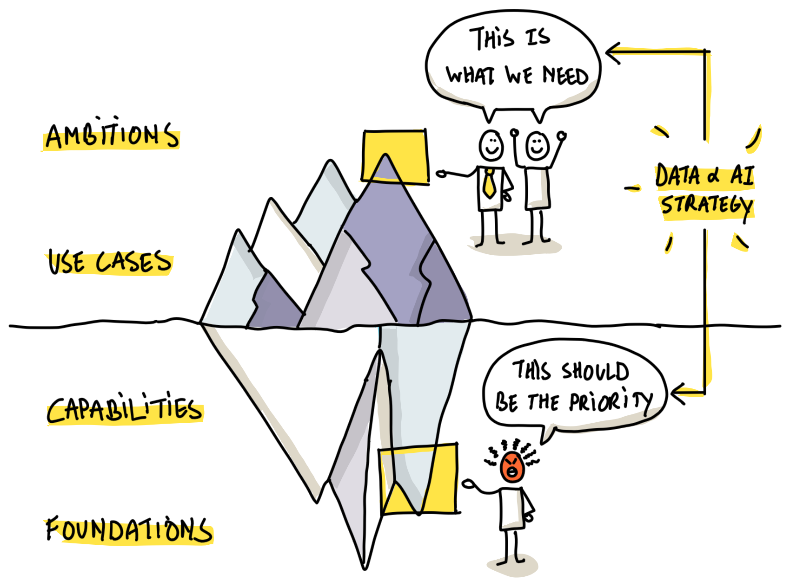
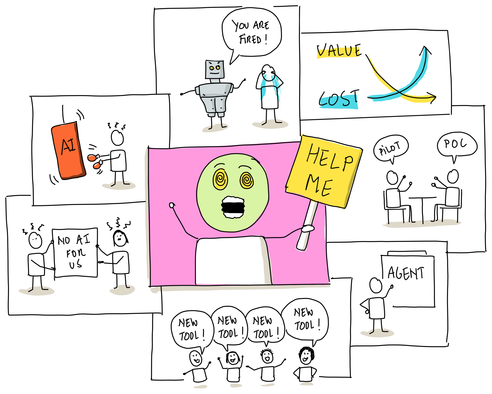

Data & AI
Strategy Sprint
Most AI initiatives don't fail on technology. They fail on everything around it: strategy, processes, people and leadership. In 7 live weeks, you build the strategy that gets that 80% right.
Why I built this Sprint
One minute: 80% of your Data & AI transformation isn't tech.
Plenty of pilots. No strategy.
Every organization has AI experiments running by now. A chatbot here, a proof of concept there. Impressive demos, enthusiastic teams. And twelve months later: still no impact on the business.
Not because the technology fell short. But because nobody decided what it was all for, who owns it, and how the organization works differently from now on. That's the 80% nobody trains for.
Check the Dates & Pricing →
Built for people who need to make AI land
This is for you
You're a data leader, CDO, (project) manager, business analyst, consultant, transformation lead or anyone in a similar role. You're the one who has to make AI actually work in your organization, not just demo well. You've seen pilots stall. You want a strategy that survives contact with reality.
This isn't for you
Looking for a coding bootcamp or hands-on model training? Then this isn't it. The Sprint is about strategy, people and organizational readiness. Not about building the models yourself. That's the 20%. We do the 80%.
Doubting if this is something for you? Get in touch!

What you'll walk away with
Your own Data & AI strategy v1.0.
A clear operating model: who owns what, and how decisions get made.
Success metrics defined upfront, so you know when it's working.
A change story to move people from resistance to momentum.
Your strategy validated against technology, privacy and ethics.
A peer pod of leaders facing the same challenges, plus all session recordings.
A personal 1-hour coaching session with Jan to put your strategy into practice.
How the cohort works
Seven weekly live sessions, capped at 20 participants so every voice is in the room. You work in fixed pods of 3 to 4 peers, building your own strategy week by week. All times are in CET (Brussels time).
More than a decade of turning ambition into results
I'm Jan Meskens. I've spent more than a decade helping organizations turn Data & AI ambitions into outcomes, as strategy advisor to leaders in retail, logistics, energy and government. I hold a PhD in Human-Computer Interaction, lecture at university level, and deliver keynotes and masterclasses across the world. This Sprint distills everything I've learned in boardrooms and classrooms into a format you can join from anywhere in the world.
Book a 15-minute Call →Prefer to reach out directly? Mail me at jan@sievax.be or connect on LinkedIn.
Strategy that survived reality
The Sprint builds on nine editions of the in-person Data & AI Strategy Masterclass. Here's what participants say.
This training taught me to turn a future Data & AI vision into a story people actually understand. I now use these storytelling techniques in every data & AI change project. It gets all stakeholders on the same page and makes them part of the transformation.
This training gave me the tools and frameworks to guide our company's data initiatives. I can now clearly articulate what we need, both inside our organization and towards external software partners.
Jan combines foundational and emerging data & AI topics in a new and refreshing way. It gave me new ideas across the board. Thank you, Jan, for sharing your knowledge!
Claim one of 20 seats
Investment
Price: Regular price 970 euro. Early bird price: €873
per seat · invoiced to you or your organization
Includes all live sessions, recordings, slides, practical workshops and a personal 1-hour coaching session with Jan.
Cohort details
- Group sizeMax 20 — kept small on purpose
- StartsJanuary 18, 2027
- Duration7 weeks
- Coaching1h personal session included
- WhereOnline, live
- LanguageEnglish
- CertificateOn completion
All prices on this website are excl. taxes (like VAT).
Request your seat
A few details is all we need. We'll reply within one business day.
Thanks — you're on the list.
We'll email you within one business day.
- No payment today — we confirm your seat by email first.
- Your details stay private. No spam, ever.
Not ready to apply? Book a 15-min call with Jan first →
Good to know before you apply
Do I need a technical background?+
No. The Sprint deliberately focuses on everything around the technology: strategy, processes, people and leadership. Week 6 gives you exactly enough technology to make strategic decisions. No code, no math.
How much time does it take per week?+
2 hours live (2.5 hours in weeks 2 and 7). No mandatory homework. If you want to sharpen your strategy document between sessions, count on an extra hour. Your choice.
Is the coaching session extra?+
No. One personal hour with Jan after week 7 is included for every participant. Optional, one on one, focused on your strategy.
What if I miss a session?+
Every session is recorded, so you can catch up whenever it suits you. But the exercises, feedback and peer discussions are the heart of the programme, so plan to attend live whenever you can.
What do I walk away with?+
Your own Data & AI strategy, version 1.0. Built week by week, stress-tested against technology and ethics, and ready to put on the table in your organization. Plus a certificate, awarded when you submit your strategy.
Who else will be in the cohort?+
Data leaders, CDOs, managers, consultants and transformation leads from different organizations and sectors. You'll work all 7 weeks in a fixed pod of 3 to 4 peers. Small enough to know each other, diverse enough to learn from each other.
Is my strategy work confidential?+
Yes. What you share in your pod stays in your pod. You decide how much organizational detail you bring in; the exercises work at whatever level of openness you're comfortable with.
Can my whole team join?+
Absolutely, and it's worth considering: a shared strategy language is half the battle. For 2 or more participants from one organization, get in touch for group pricing.
Can I get this training in person, on site in my organization?+
Yes. We deliver this programme on site for teams, anywhere in the world, tailored to your organization's context. Get in touch to discuss the possibilities.
I have a question that isn't listed here.+
Get in touch! You'll get an answer from me, not a mailbox.
Not sure yet? Let's talk.
Some questions don't belong in a FAQ. Whether the Sprint fits your role, your organization or your timing is best answered in a short conversation.
Prefer email? jan@sievax.be, you'll get a reply from me, not a mailbox.
No sales pitch. Just an honest answer on whether this is for you.
Ready to build a strategy that actually lands?
Only 20 seats · Next cohort starts January 18, 2027
Join the next cohort →